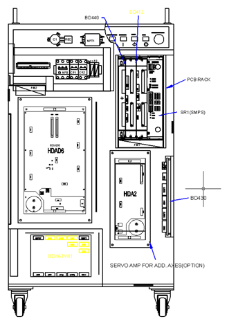
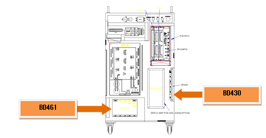
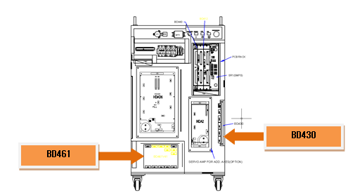
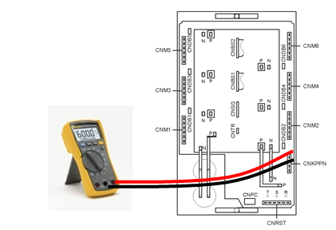
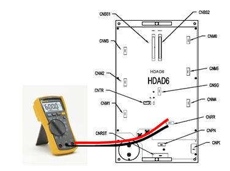

1.1.6.1. Outline
The direct current voltage (P-N) of the Servo drive unit that drives the motor exceeded the set value.
1.1.6.2. Causes and checking methods
|
< Case: Error always occurs even when the motor is off. > (1) Check the parts related to the overvoltage error detection. n Please replace the CNSG cable and examine it. n Please replace the BD461/BD430 board and examine it. n Check after replacing the servo drive unit.
< Case: Error always occurs at the moment when the motor is turned on. > (2) Please examine the components that are related to power. n Check after replacing the servo drive unit. n Check the controller internal three-phase voltage. n Check the controller input three-phase voltage.
< Case: Error occurs at a certain step according to the robot¡¯s operation speed> (3) Change the robot playback speed and then check the error. n Please reduce the speed of the robot¡¯s operation to confirm the error. n Check the regenerative discharge resistor value. |
(1) Check the parts related to the overvoltage error detection.
AMP overvoltage occurrence error is detected by the diode module when the direct current voltage (P-N) that has been supplied to the Servo drive unit exceeds the configured level. Detected error will be sent through the CNSG cable to be handled by the BD461/BD430 board.
Figure 5.12 Locations of components in the Hi4a-0000 controller that are related to the overvoltage occurrence error

Figure 5.13 Locations of components in the Hi4a-0010/0012 controller that are related to the overvoltage occurrence error
n Replacement and examination of the CNSG cable
Replace the CNSG cable with a new one and test it. If the error does not persist, cable connection problem caused this error. Please replace the CNSG cable with a new one.
n Replacement and inspection of servo drive unit
The components that detect the overvoltage occurrence error are the HSXY6 (medium size) and the HDAD6 (small size). Please check the components in the controller that you are currently using and examine it. Please replace it with a new one and see if the error persists.
Medium-size robot¡¯s Servo drive unit: HSXY6
Small-size robot¡¯s Servo drive unit: HDAD6
n Replacement and examination of BD461/BD430
Replace the BD461/BD430 with a new one and test it. If the error does not persist, board malfunction caused this error. Please replace the BD461/BD430 with a new one.

Figure 5.14 Replacement of the Hi4a-0000 controller¡¯s BD461/BD430

Figure 5.15 Replacement of the Hi4a-0010/0012 controller¡¯s BD461/BD430
(2) Please examine the components that are related to power..
Overvoltage error occurs when the direct current voltage that exceeds DC 395 V due to the three-phase input voltage over AC 220 V enters the Servo drive unit.
n Replacement and inspection of servo drive unit
The components that detect the overvoltage occurrence error are the HSXY6 (medium size) and the HDAD6 (small size). Please check the components in the controller that you are currently using and examine it. Please replace it with a new one and see if the error persists.
Medium-size robot¡¯s Servo drive unit: HSXY6
Small-size robot¡¯s Servo drive unit: HDAD6
n Examine the three-phase voltage.
AMP overvoltage error is activated from approximately DC 395 V. If a voltage over AC 242 V enters the Servo drive unit, a recovery discharge resistance overheat error may occur when the motor is turned on. If the input voltage exceeds the allowed range, please examine according to the controller¡¯s input voltage examination procedures and three-phase internal voltage examination procedures.
¨ª Servo drive unit input voltage specification: Three-phase AC220V
¨ª Allowable range when the motor is on: Three-phase AC 198V ~ 242V
(3) Please confirm the occurrence of error according to the speed of the robot¡¯s operation.
If the robot reduces speed rapidly or makes a high-speed movement toward the direction of gravity, it can cause an overvoltage error. Please confirm if an error occurred according to the speed of the robot¡¯s operation. AMP overvoltage occurrence error can also be caused by an invalid recovery discharge resistance value or recovery discharge control malfunction. In case when a robot¡¯s speed is reducing or moving toward the direction of gravity, the voltage of the Servo drive unit increases and will be discharged with a recovery discharge resistance to prevent damages on the components that may be caused by an increased voltage.
n Make changes on the speed of the robot¡¯s operation.
If a recovery electric power that was generated by the robot¡¯s operation exceeds the controller¡¯s designed specification, overvoltage error may occur. Please reduce the speed of the step in which the error occurs, and re-operate to confirm if the error persists. If the error does not occur when the speed is reduced, please change the speed of the step and use it.
n Examining the recovery discharge resistance value
If the recovery resistance value is greater than the specification, the recovery discharge does not perform well, and it will cause the overvoltage error. Please replace the recovery discharge resistor with a new one or repair the wiring. Make sure to turn off the controller before inspecting it.
Medium size (HSXY6) recovery discharge resistance value: 7.5¥Ø (Between K and P of the CNKPPN connector)
Hi4a-0010 recovery discharge resistance value : 25 ¥Ø (Between K and P of the CNRR connector)
Hi4a-0012 recovery discharge resistance value : 15 ¥Ø (Between K and P of the CNRR connector)

Figure 5.16 Measuring the resistance value from the Hi4a-0000 controller¡¯s CNKPPN

Figure 5.17 Measuring the resistance value from the Hi4a-0010/0012 controller¡¯s CNKPPN